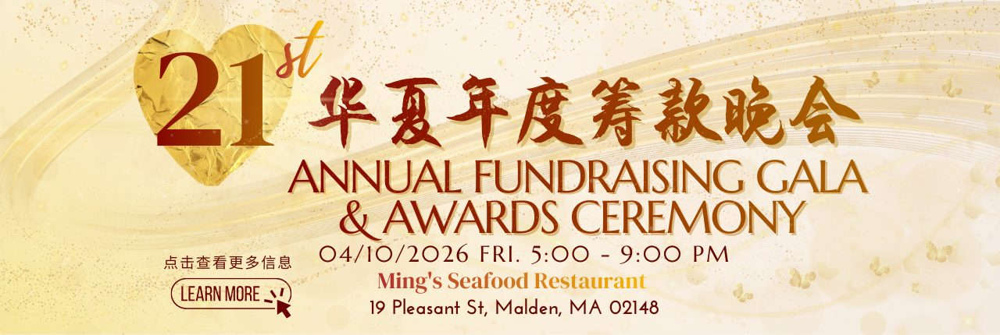
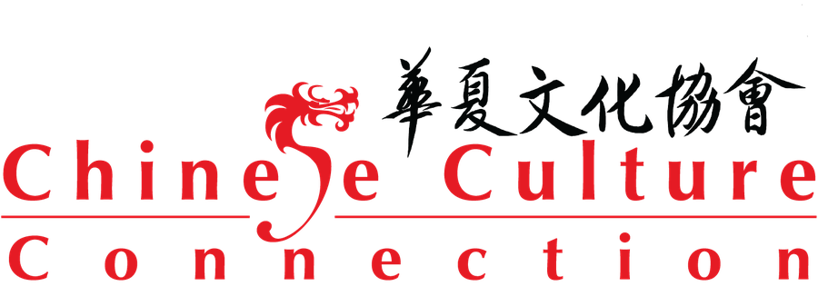

Greater Boston · since 1985
A Greater Boston nonprofit and our sister organization across the Pacific. For forty years it has helped Chinese immigrant families keep their heritage — and opened the door to Chinese language and culture for the wider community.
Why we are partners
Chinese Culture Connection and My Culture Connect stand on opposite shores of the Pacific with the same purpose: bilingual, bicultural education and cross-cultural understanding. We bring English and the world into Taiwan's classrooms; CCC helps Chinese families in Greater Boston treasure their roots and move easily between two cultures.
The connection is more than shared values — a teacher with My Culture Connect also serves on Chinese Culture Connection's board, keeping the two organizations in close, ongoing dialogue.

Mission
"Through diverse educational programs, cross-cultural dialogues, and special events, the CCC empowers Chinese immigrants and Chinese descendants of the Greater Boston Area to appreciate and preserve their heritage."
Founded in 1985 in Reading, Massachusetts by Catherine Hsu, the organization moved to Malden in 1999 at the invitation of the city, where it remains today.
Year-round
Weekend Mandarin classes for children and adults across the community.
After-school and summer enrichment in language, arts and culture — a second home for children.
A year-round flagship platform: youth leadership, civic forums, arts & wellness, immigrant literacy and more.
Mentoring that helps young people lead with confidence and bicultural pride.
Each June the team races on the Charles River in North America's oldest dragon boat festival.
Launched in 2025 — a bilingual journal of heritage, community stories and bilingual education.